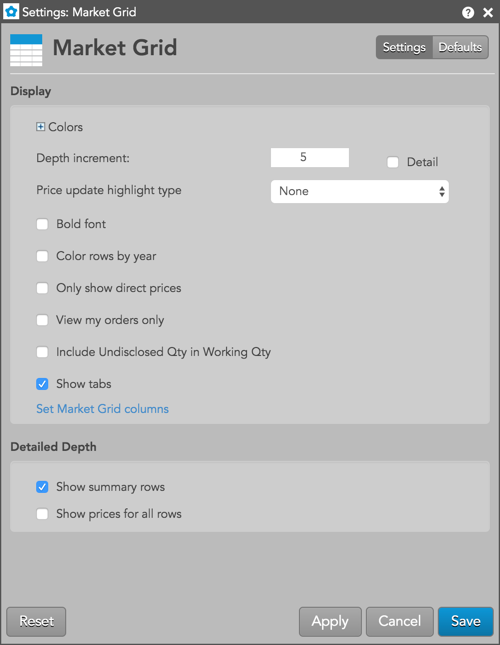
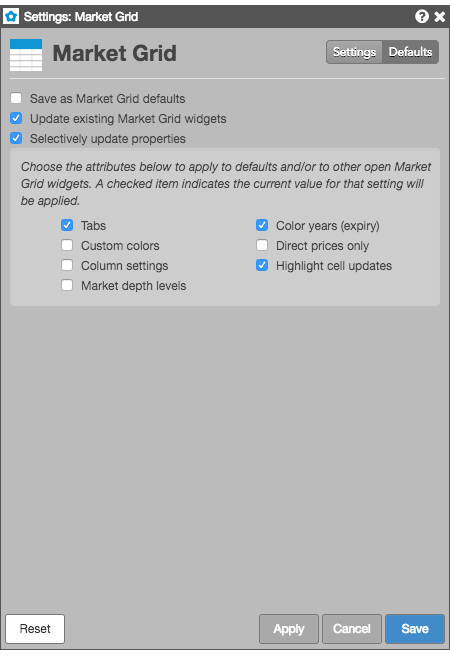

These settings affect only the selected Market Grid widget. To update the default settings with these value for newly-opened Market Grid widgets, or to apply them to existing opened widgets, click Defaults.

{% include settings/market-grid-settings.html %}Market Grid lets you select individual customizations to save as default Market Grid settings and to update existing Market Grid widgets, while applying other customizations the current widget. Checking either of the Save as Market Grid defaults or Updating existing Market Grid widgets settings enables the Selectively update properties setting. You can choose the individual widget attributes to you want to save.
